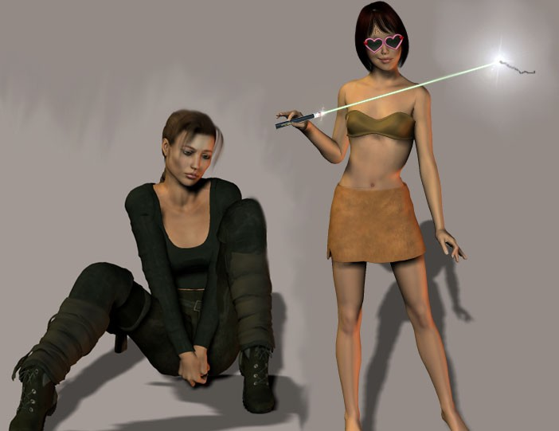
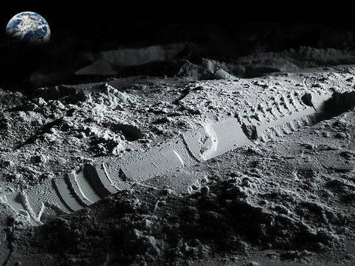
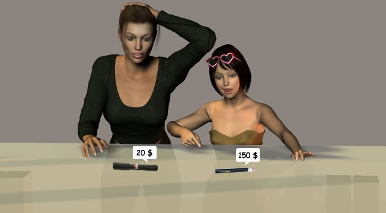
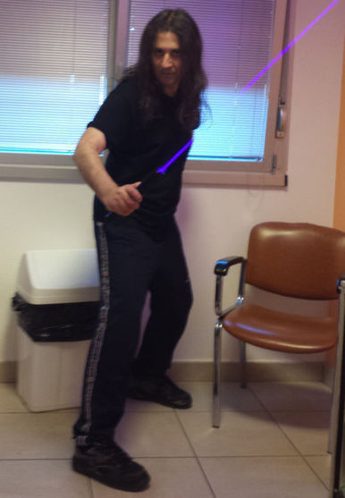
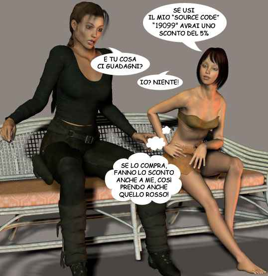
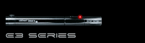
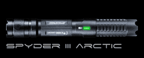
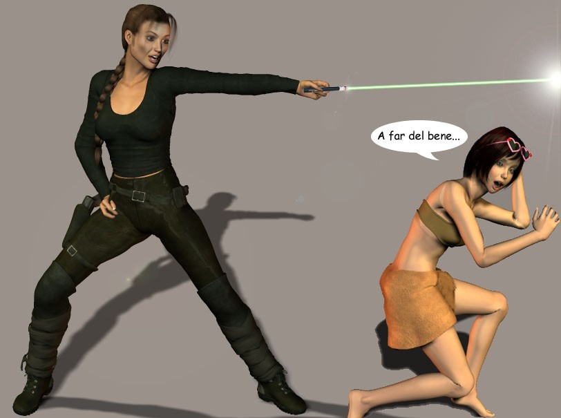
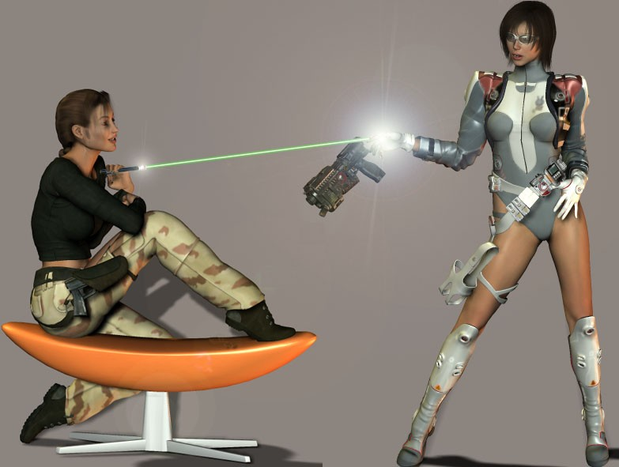

Piccolo e leggero
|
Piccolo e leggero |
| Un raggio che taglia e brucia |
Da pochissimo tempo è alla portata di tutti uno splendido gioiello tecnologico:
Il LASER portatile a diodo di potenza.
Fino a un paio d'anni fa i laser portatili in grado di tagliare e bruciare si potevano vedere solo nei film di fantascienza o nei videogiochi!
Ma da poco tempo sono disponibili nuovi tipi di laser portatili costruiti con i recentissimi diodi LASER di Classe IIIB e IV.
Le classi dei LASER I (<4mW) Completamente innocui (usati nelle telecomunicazioni a fibre ottiche). Im Sono innocui a meno che non vengano osservati tramite dispositivi ottici in grado di concentrare il raggio sulla retina. II (<1mW) Non in grado di arrecare danni per via del riflesso palpebrale che la durata di esposizione della retina al raggio (ad es. stampanti laser), questa classe si applica solamente ai laser che operano nel visibile. IIIa (<5mW) Possono danneggiare la vista se guardati tramite dispositivi ottici come binocoli o lenti. IIIb (<500mW) L'esposizione diretta al raggio è sempre pericolosa per la vista e in grado di causare danni alla cute, mentre la radiazione diffusa non è in grado di fare ciò. IV (>500mW) Questa è la classe di Laser più potente in assoluto. E' pericolosa l'esposizione anche al semplice raggio diffuso (si tratta solitamente di laser industriali usati per il taglio dei metalli). |
|
Ciò che fino a poco tempo fa era esclusivo appannaggio dei film di fantascienza è ora alla portata di tutti!

I LASER portatili di potenza sono in grado di bruciare e di tagliare!
Si tratta ovviamente di dispositivi potenzialmente pericolosi, e la legge vieta di utilizzare i LASER di classe IIIB e IV in luoghi pubblici o di orientare il loro fascio contro gli aerei. Per dare un'idea, l'utilizzo di questi LASER come arma è vietato dalla convenzione di Ginevra. |
Che potenze hanno questi LASER?
| Tutti i LASER che superano i 5mW di potenza, tecnicamente possono essere definiti laser di Classe IIIB, ciononostante, le loro performance variano a seconda della potenza. Per avere un LASER in grado di bruciare/tagliare qualcosa è necessario superare i 55mW. Questa è una tabella che dà un'idea delle varie potenze.
I LASER portatili più piccoli (delle dimensioni di una penna) hanno potenze che vanno dai 5mW ai 200mW, mentre i modelli più ingombranti (e costosi) possono arrivare anche a 500mW. Il più potente laser portatile attualmente in commercio (l'Arctic) arriva a generare oltre 3500mW di potenza. |
Come funzionano questi nuovi LASER?
| Tecnicamente i laser verdi sono dei DPSSL (Diode Pumped Solid State Laser). Un diodo laser di potenza (alimentato da un sistema di autoregolazione dell'intensità del fascio) emette un raggio infrarosso a 808nm che viene focalizzato da una lente e diretto verso un cristallo di Nd:YVO4 che genera a sua volta un fascio laser a 1064nm, il fascio attraversa poi un altro cristallo (KTiOPO4) che ne dimezza la lunghezza d'onda a 532nm. Il fascio così prodotto (verde) passa attraverso un filtro a infrarossi che elimina ogni contaminazione infrarossa residua e infine viene collimato da una lente apposita. Il risultato sarà un fascio LASER verde brillante a 532nm, ben collimato e purificato dalle frequenze spurie (infrarosso). Negli altri casi (laser rossi e blu) si tratta più semplicemente di Diodi Laser il cui fascio viene collimato e focalizzato grazie ad una serie di lenti. I laser verdi sono comunque i più luminosi in assoluto per via della maggiore sensibilità dell'occhio umano a queste frequenze. |  |
Ma questi Laser sono davvero Pericolosi?
|
La risposta è:
ASSOLUTAMENTE SI! In mani inesperte possono costituire un vero pericolo per se stessi e per gli altri.
La stupidità, la noia, l'inesperienza, la curiosità e la giovane età, uniti ad un Laser di potenza possono costituire un Mix Letale. Tipici esempi di uso sbagliato/incauto possono essere:
Ci sono in realtà delle leggi molto restrittive in materia anche se normalmente non vengono applicate rigorosamente. anche perchè la polizia stessa non ne è a conoscenza, ma, nel caso vengano prodotti dei danni, possono facilmente mettere nei guai l'utilizzatore. Più nello specifico, è vietato puntare un Laser contro un aereo, così come è vietato usare un Laser di Classe IIIB e IV in un luogo pubblico. L'utilizzo di tali strumenti come arma è vietato addirittura dalla Convenzione di Ginevra. |
Si possono vedere questi Laser in azione?
| Da quando sono in vendita questi nuovi tipi di LASER sono rapidamente cresciute vere e proprie comunità in rete con lo scopo di mettere online i filmati degli esperimenti relativi alle prove di taglio/fusione/effetti ottici ottenuti con i loro laser. Questi sono alcuni filmati di esempio, nel primo un laser da 75mW viene contrapposto ad una fila di palloncini allineati, mentre nell'ultimo il molto più potente Arctic da 1400mW incide, bruciandola, una tavoletta di legno: |
|
|
Qual è il LASER portatile più potente di tutti?
Il più potente laser portatile a Diodo attualmente sul mercato è l'Arctic della WickedLasers. Ne esistono tre versioni,
la versione basica da 1000mW,
la molto più potente versione da
2000mW e infine il top della gamma, in grado di generare oltre 3500mW nella frequenza di 445nm (Blu).
La potenza di questi laser è stata progressivamente aumentata fino al
raggiungimento della massima potenza teorica ottenibile dai diodi sul quale
l'Arctic si basa (3.5 Watt appunto).
Si tratta di un laser di Classe IV estremamente potente e pericoloso, esteticamente è molto somigliante ad una Spada Laser e per questo la casa produttrice ha avuto diversi problemi legali con George Lucas che ha intrapreso un'azione legale per bloccarne la produzione.
Nel video si può osservare l'Arctic messo a confronto con il suo predecessore.
Il costo dell'Arctic si aggira intorno ai
150-400 dollari a seconda della potenza desiderata. Non è costosissimo per il fatto che si basa su di un diodo in grado di produrre direttamente in uscita la frequenza
desiderata senza richiedere costosi cristalli di trasformazione (come accade per i laser verdi). Si tratta comunque di uno strumento veramente pericoloso e il suo acquisto è consigliato solo e unicamente a persone adulte, responsabili ed in grado di comprenderne appieno la pericolosità.
Insomma, è assolutamente sconsigliato come regalo a ragazzini di 15 anni.
Aggiornamento
Dal Novembre 2014, la ditta produttrice dell'Arctic, la WickedLasers, ha cambiato gestione e, forse a seguito dei numerosi problemi legali che la vendita di questo tipo di laser implica o a forse come conseguenza della causa legale intentatale da George Lucas per la notevole somiglianza dell'Arctic/Lunar/Krypton ad una "Spada Laser", ha dichiarato che, a partire dall'1 Gennaio 2015, avrebbe smesso di vendere laser di potenza superiore ai 5mW ai paesi dell'area US e così è stato. Ciononostante, pur avendo affermato che, da lì a poco tali restrizioni sarebbero state estese agli altri paesi (inclusa l'Italia), il proclama non ha avuto seguito ed a un anno dalla notizia i suddetti laser risultano ancora in vendita, ne è stata addirittura introdotta una nuova variante che quasi raddoppia la potenza della versione precedente (l'Arctic da 3500 mW).
|  |
Ma non si trovano rivenditori in Italia o in Europa di questi tipi di Laser?
NO! Questa domanda viene posta spesso e la risposta è: ASSOLUTAMENTE NO! Infatti secondo le norme della Comunità Europea è categoricamente vietato:
1. L'acquisto di Laser da parte di
privati di potenza superiore ai 5 mW.
2. Ogni tipo di commercializzazione dei
Laser di Potenza per utilizzo privato che non sia medico o industriale.
3. L'importazione di Laser di potenza superiore ai 5 mW
dall'estero.
Di conseguenza un metodo sicuro per ottenere uno di questi Laser al momento non c'è... infatti se lo si ordina dall'estero si violano comunque le leggi, anche se c'è la speranza che la dogana lo lasci passare (cosa che una volta succedeva sempre, ma che ora ha iniziato a succedere meno), se li si cerca in negozi nostrani semplicemente non si troverà niente, o al massimo qualche imbroglio (laser di cui viene indicata la potenza di picco, laser senza il filtro infrarosso, etc).
Ok furbetta, lo voglio anch'io, dove si compra?
| Vengono tutti dall'estero, si comprano online e si pagano con Paypal o con Carta di Credito. Arrivano direttamente a casa. Questi laser si dividono in due categorie: LASER di potenza veri.
Ci sono poi diversi altri produttori (come la Information Unlimited) che semplicemente rivendono i modelli di queste ditte. LASER non di potenza, ma taroccati in modo da sembrarlo.
E' possibile trovare dei LASER di potenza a poco prezzo?  NO! Attualmente NON esistono LASER di potenza a basso prezzo. Ci sono comunque molti produttori che sostengono di poter offrire LASER di potenza a prezzi quasi stracciati, molti di questi LASER si trovano su eBay, in ogni caso, SONO ASSOLUTAMENTE DA EVITARE! Pericolosità dei laser Low Quality Questi LASER economici sono in realtà poco più che dei normali puntatori Laser, sono spesso verdi per massimizzare l'effetto sulla retina umana, di bassa potenza (10-20mW al massimo) taroccati in modo da ingannare i laserometri (dispositivi utilizzati per la misura della potenza di un LASER). Il trucco più usato consiste nel rimuovere il filtro degli infrarossi, i laserometri vengono confusi dalla presenza di più frequenze e indicano potenze anche di molto superiori a quelle reali.
Chi ne acquista uno, si trova in mano un puntatore laser verde a bassa potenza che emette un largo fascio infrarosso divergente. Questo, in qualche caso, può consentire a brevissima distanza anche di accendere un fiammifero, ma è il fascio infrarosso che compie l'opera, non il debole raggio laser. Il fascio infrarosso è molto pericoloso per gli occhi visto che diverge e non è visibile, per cui, eventuali riflessi (non percepibili), possono causare danni permanenti senza che l'utilizzatore se ne accorga dato che il cervello all'inizio compensa i danni; oltre un certo limite però, la perdita di fotorecettori inizia a farsi sentire e non c'è alcuna cura possibile visto che la retina fa parte del sistema nervoso centrale che, come è noto, è incapace di rigenerarsi. Ulteriore pericolosità proviene dal fatto che non essendo il fascio infrarosso visibile, questo non induce il normale riflesso di contrazione dell'iride che, normalmente, protegge la retina dall'esposizione eccessiva alle radiazioni. Un altro trucco, spesso utilizzato, è quello di indicare la potenza di picco al posto di quella intermedia (tutti i laser a diodo, appena accesi, hanno un picco di potenza). Test del Filtro IR Nel caso disponiate di uno di questi laser economici e vogliate verificare la presenza o meno del filtro infrarosso, potete ricorrere a questo semplice test:
|
Ma alla fine quale mi conviene prendere?
Sapete cosa desidera ogni possessore di Laser? "Un Laser più potente" Questa è una Verità assodata e per questa ragione consiglio Sempre di acquistare il modello più potente della categoria o, in alternativa, di non comprarlo affatto. Nessuno vi obbliga ad acquistare un Laser e di sicuro non ha senso acquistare un laser da 15mW per poi smaniare per quello da 125mW.
Nel seguente filmato viene messo in evidenza cosa si può fare con
la potenza di un Laser della classe dell'Arctic (2000mW): In poco tempo è in
grado di perforare 11 CD.
In troppi, dopo avere acquistato la versione da
1000mW
si sono trovati a desiderare di aver preso la versione da 2000mW o da 3500mW!!!
|
Nelle community dedicate ai LASER portatili, è opinione diffusa che i migliori per qualità, potenza, portatilità
e persino estetica siano quelli della Wickedlasers, il pacco arriva a casa nel giro di
qualche settimana dall'acquisto (provato di persona). Nella foto qui sotto
l'Arctic della WickedLasers; si tratta dello specifico modello per la cui
somiglianza con una "Spada Laser" George Lucas ha sporto denuncia per impedirne
la commercializzazione.
|  |
- Aggiornamento -
1. Il Source Code non funziona più (ho lasciato il fumetto perchè mi fa ridere, ma il codice non è utilizzabile per avere lo sconto).
2. Ultimamente alla dogana si sono fatti più furbi, per cui non c'è più la sicurezza di qualche anno fa che il Laser arrivi a casa (ho saputo di casi in cui il pacco è stato bloccato e rispedito indietro), per cui comprate a vostro rischio.

Ci sono diverse serie di LASER di potenza tra cui scegliere:
Core (5mW) | Puntatori laser Verdi, questo è il modello "base", non sono pericolosi per la vista, funzionano con due normali batterie AAA e, grazie alla tecnologia Spartec che consente di mantenere costante la potenza erogata nel tempo, risultano molto più luminosi di quelli normalmente reperibili in commercio. |
E2 (100mW) | Laser Rossi, Verdi e Blu, buoni per piccoli esperimenti di taglio/bruciatura, ma soprattutto da usarsi come puntatori astronomici e/o per le grandi distanze. Per questo tipo di utilizzo è meglio orientarsi su quelli Verdi che, per via della maggiore sensibilità della retina a queste frequenze, hanno una visibilità nettamente superiore rispetto ai modelli Rossi e Blu. |
E3 (200mW) | Laser Rossi, Verdi e Blu, simili ai precedenti ma più potenti e quindi più orientati verso gli esperimenti di taglio/bruciatura. |
S3 Arctic (3500mW) | L'Arctic rappresenta il più potente/visibile laser portatile disponibile oggi sul mercato. Ne esistono tre versioni, la Rossa
(che prende anche il nome di "Inferno"), la Verde
(a sua volta denominata "Krypton") e la Blu
(che sarebbe l'Arctic vero e proprio), la prima sviluppa una potenza massima di 750mW,
la seconda di 900mW, mentre la versione Blu, viene venduta in tre varianti, da
1000, da 2000 e da 3500mW. La versione Verde rappresenta il laser portatile con la maggiore visibilità al mondo per via della maggiore sensibilità della retina verso questa frequenza, mentre la versione Blu, rappresenta, ad oggi, il laser portatile più potente al mondo. L'Arctic Blu è votato soprattutto ad esperimenti di taglio/bruciatura. La tecnologia di raffreddamento Tesla garantisce un fascio di potenza costante, al contrario di molti altri prodotti concorrenti che forniscono potenze elevate solamente nei primissimi secondi. |
| Lo Spyder II GX in azione (Era il modello precedente dell'Arctic/Krypton) |
|
(500mW verde) |
E adesso che ce l'ho anch'io, fila via ragazzina!!!

Come scegliere gli Occhiali Anti-Laser?
Come già specificato, quando si utilizzano Laser di Classe IIIB o addirittura IV, una adeguata protezione agli occhi è assolutamente necessaria. Ci sono diversi tipi di occhiali anti-laser in commercio, ma, come spesso accade, i prodotti migliori sono quelli di origine militare.
La stragrande maggioranza degli occhiali anti-laser, sono occhiali Laser-Specifici, in grado cioè di bloccare un unico tipo di laser e che risultano inutili nei confronti delle altre tipologie. I modelli militari invece, nascono con lo specifico scopo di garantire, oltre alla tradizionale protezione balistica, anche una protezione generalizzata nei confronti dei tipi più comuni di Laser piuttosto che di un'unica tipologia.
 |
Il modello qui raffigurato rappresenta lo stato dell'arte, si tratta di un modello militare prodotto per le forze speciali americane in grado di fornire potezione nei confronti di praticamente qualunque tipo di laser di potenza, nel seguente elenco trovate le principali lunghezze d'onda che è in grado di bloccare più le principali caratteristiche (se riuscite a trovarli prendeteli ad occhi chiusi):
Ne esiste anche un altro modello simile (con lenti di colore verde) meno costoso in grado di bloccare anche lui la maggior parte delle frequenze qui sopra citate.
Il particolare valore di questo tipo di protezione sta nel fatto che costituisce uno strumento di protezione a valididà generale in grado di offrire una efficace protezione contro praticamente ogni tipo di laser il che lo rende particolarmente utile sia nel campo sperimentale che in quello bellico.
Il modello in questione l'ho trovato diversi anni fa su ebay, ma da allora non l'ho più visto in vendita, in ogni caso, un qualcosa di simile oggi lo si può trovare anche nel mercato civile su siti come quello della ThorLabs.
Quando avrò finito di sistemare le colleghe rimarrò l'unica reginetta dei Videogiochi!!!

| ||||||
|